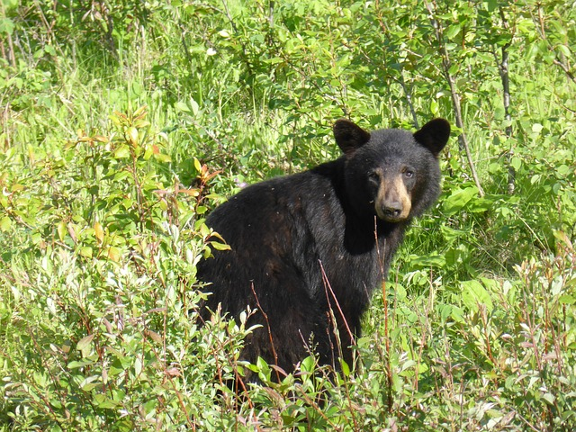
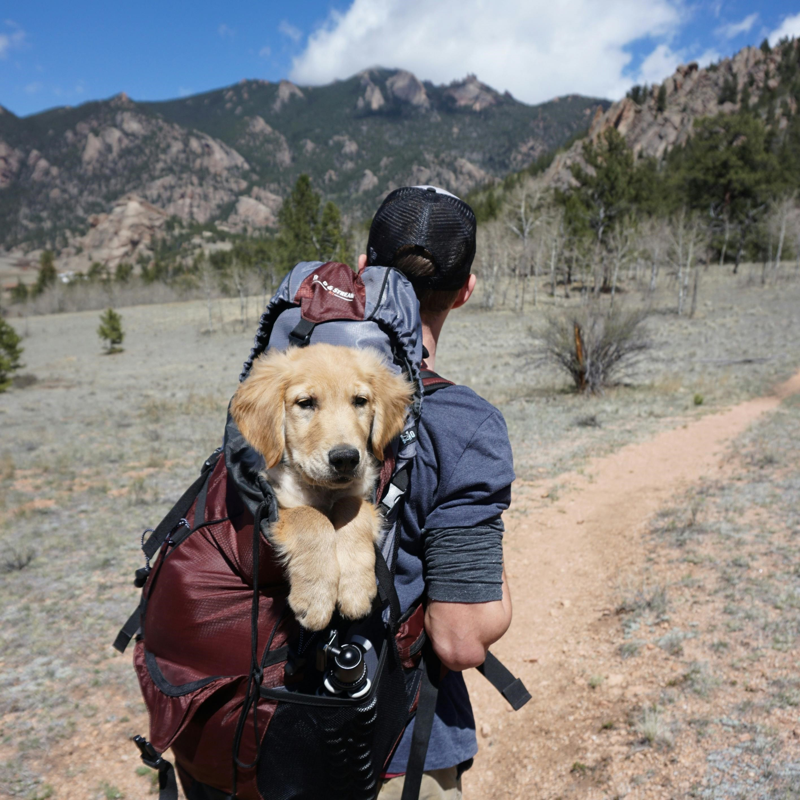

About Us

Our Mission
Our mission is to provide sanctuary to those who seek adventure, a getaway for young couples to bond through shared experience, and a retreat for those who need some time away from the daily grind. We aim to do this in the most sustainable way possible. We incorporate the zen practice of focusing on the breath in all of our activities to ensure you are in touch with your body's needs and limitations. Our menu is designed to help naturally detox and nourish the body. This is meant to be a place where one can come to strengthen the mind-body connection and their connection with others. Whether you're looking to embrace the adventure through one of our many available activities, or just in it for the rest and relaxation, our goal is to see you looking lighter by the time you check out. We want you to leave feeling rejuvenated and knowing that you have a safe haven here at Pacific Trails Resort.
Our Team
Our highly trained and diverse staff will be available 24-7, so you can rest easy and enjoy the experience knowing that you will be taken care of every step of the way. We operate as a team who treats each other, and our guests, like family. Our team members are very approachable, eager to get to know you, and always ready to help. So please feel free to approach anyone you see with a Pacific Trails Resort Team Member shirt, or contact our front desk, and they will be able to assist you with whatever you need regarding your stay. Our team leads and tour guides are CPR and AED certified, and there will be at least 2 of these certified team members on the grounds at all times. So relax and enjoy the moment, you're in great hands with us.

Wildlife Warning
We all love seeing the amazing wildlife that inhabits the area around Pacific Trails Resort, but there are some animals to watch out for while you're out exploring. We will provide to you a full list of the common wildlife seen in the area and which plants and animals to steer clear of with your welcome packet at check in. Our tour guides are very knowledgeable in what to be aware of out on the trail to reduce the risk of encountering a dangerous animal or come in contact with a poisonous plant. When you sign up for our activities, we can schedule you for a safety brief with one of our tour guides to inform you on how to prepare for the terrain, inclement weather conditions, how not to get lost, and what to do if you do encounter a dangerous animal. This safety brief is highly recommended to any experience level, whether you're a hobbyist or a survivalist, this course has a lot of great information to offer. More details provided at booking.

Pet Policy
We are a dog friendly community, and while we love all dogs, we have some guidelines for our visitors who want to bring their furry friends with them:
- You know your dog better than we do, so we ask that you use your discretion on how to prepare your pup for the trip. There will be other people and other dogs on the grounds, so please take your dog's temperament into consideration when making arrangements.
- Due to allergy and noise concerns for our other guests, we have our dog friendly section of the grounds with dog friendly yurts, an off-leash dog park, and potty stations.
- All dogs must be kept on a leash while on the grounds. We have posted ares where there are no dogs allowed.
- Sorry, no dogs allowed in the zen gardens or meditation areas for those interested in our Zen Retreat package.
- We cannot allow dogs on the guided group hikes, birdwatching tours, or in our kayaks.
- Dogs are allowed off-leash on the trail, however, should you decide to let your dog roam, you assume all liability and responsibility for the actions of your dog, or anything that may happen to your dog on the trail.

Sustainable Living
We are a green focused community here at Pacific Trails Resort. We only use locally sourced ingredients for our menu, solar and wind generated power, and energy efficient materials and appliances to help conserve our beautiful land. Throughout our grounds you will see bins marked for compost, recycling, and waste. We also provide tips on how to conserve resources in our daily lives in your welcome packet upon check in. We ask that our guests observe these signs and tips while staying with us. Help us take care of the land that takes such great care of us.
Our Policies
Age Requirements
We want you to feel like family here, but our facilities aren't designed for families. Our minimum age requirement is 18+ to stay and participate in our activities, but our age requirement to book a stay with us is 21+. What this means is that our guests who are over the age of 18, but under the age of 21 can stay in their own yurt, and participate in our activities unsupervised, but an adult who is 21 years or older must be the one to book the stay and must be present for the duration of the stay, as this is who will be held responsible for the underage guests.
Payments
A valid credit card must be used to book a stay with us. The name on the credit card used must match that on the photo ID of the individual who booked the stay. Any extra services or other fees accrued during your stay will be charged to this credit card. Not to worry, there are no hidden fees and everything will be explained to you upon booking and explained in our welcome packet.
Cancellations
Cancellations are free up to 48 hours prior to your check in. If you cancel within 48 hours you will be charged a cancellation fee of $100. If you cancel within 24 hours of your check in, you will be charged half the price of your booked stay.
Refunds
All refunds will be handled the moment you cancel. The entirety of your purchase will be refunded minus the accrued cancellation fee and credit card service fee. If you decide to check out early, you will not be charged any extra for early departure, and we will initiate a refund for the prorated amount.
*These policies will be explained in detail upon booking and documentation will be provided upon purchase and upon check in.